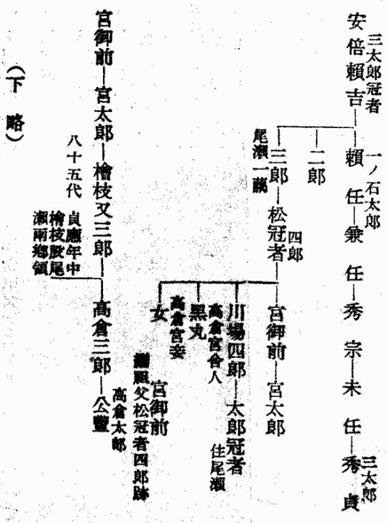

| 尾瀬の昔と今 | |
| 木暮 理太郎 | |
| (2016) | |
尾瀬の昔と今
木暮理太郎
尾瀬の名は『会津風土記』に「小瀬峠 陸奥上野二州之界」又
は「小瀬沼 在会津郡伊南郷縦八里横三里」として載っているのが古書に見られる最初である。此
書は寛文六年に編纂されたもので、これに先立つこと約二十年の『正保図』には、「さかひ沼」と記してあるが「をぜ沼」とは書いてない。或は正保以前から「をぜ」の称があったかとも思われる、けれども『会津風土記』以外には確
な記録がないのである。上州方面では古い地誌の編纂がなかったので、遥
に後
れて個人の手に成った安永三年の序ある『上野国志』に、
沼峠 駒ヶ岳の東に在り、上野・越後・陸奥の界なり、山上に沼あり、尾瀬沼と云、沼の中央国界なり。
とあるのが最初の記録であろう。是等
に拠
ると会津方面では小瀬と書き、上野方面では尾瀬と書いていることが分る。しかし孰
れの地方が名付親であるかは判然しないし、又をぜの語源も知る由がない。武田君の話に拠ると、阿能川
岳と小出俣
岳との間の尾根に俚人が「をぜの田」と称する処があって、矢張
り草原の湿地であるとのことであるから、参考とす可
き地名である。『利根郡村誌』には尾瀬沼の項に
尾瀬沼ハ往昔阿部三太郎尾瀬ニ住シテ此沼ノ沿岸ニ稲ヲ播シテ何処ヨリモ早キヲ以テ早稲ト称シ中古慣称シテ早瀬ト云後チ今ノ尾瀬沼ト改称セリ
とあって、早稲の転訛したものとしてあるが、尾瀬で米の作れないことは其
後の実験が証明している。これは何処にもよくある例の地名に附会した説明に過ぎまい。
尾瀬の伝説は二、三あって以仁
王に関するものが会津方面に伝わっている。南会津郡楢原村大字水抜の高倉山の麓に在る高倉神社は、高倉宮以仁王の霊を祭ったものであるというが、此附近には倉と名の付く地名が多いから、倉は嵓
を意味し、高倉神社の起原もそれと関聯
したもので、以仁王のことは後に結び付けられたものではあるまいかと思う、然
し確なことは実地を知らぬので何とも云えない。明応九年に記したという高倉神社の勧進帳の文は、文化六年の序ある『新編会津風土記』に載っている。夫
に拠ると王の御一行は東海道から陸奥に赴かんとして檜枝岐山を通られたと記してあるので、尾瀬を経由したものであろうと想像されるのみに過ぎない。然るに同じ村の大字大内に在る高倉神社の社記は、治承四年八月六日渡部長七唱の手記に係ると伝えられ、宮川久雄君が採録して、大正十二年発行の『登高行』第三年に掲載した。其全文は次の通りである。
人皇八十代高倉院ノ御宇治承四年秋書
院ノ第二皇子以仁親王、是レヲ高倉宮ト号ス。源三位頼政ノ勧メニ依リ、兵ヲ挙ゲ、宇治川ノ合戦ニ敗北シ、足利又太郎忠綱ノ情ニテ、御助命アリ、越後ノ住人小国右馬頭頼之ニ依リ、落チ給フ。右馬頭ハ頼政ノ弟ナリ。親王供奉ノ面々ニハ、尾瀬中納言藤原頼実（是レハ檜枝岐山ノ尾瀬大納言頼国ノ弟ナリ）、同三河少将光明、同小椋少将藤原定信、同乙部右衛門佐重朝（頼政ノ子ナリ）、並渡部長七唱、猪野隼太勝吉、其他従卒十三人、外ニ西方院寂了（是レハ長谷部信連ノ一族）。親王中仙道筋御下向、上州沼田ヨリ戸倉沼山ニ御泊。八日尾瀬中納言卒去、骸骨ヲ沼ノ上ニ納メ、尾瀬院殿大相居士ト号ス、則チ文ハ宮ノ御筆ニ成ル。治承四年七月九日尾瀬殿邸ヲ発セラレ、檜枝岐ニ御下リ、燧ヶ岳ノ麓ノ沢ニテ三河少将卒去、又茲ニテ御筆ヲ以テ、参高霊位大相居士ト石文アリ、此ヨリ此沢ヲ参河沢ト唱ヘ、夫レヨリ漸ク檜枝又ニ着セラレ、御宿村司嘉慶泊リ、御前足ニ国ノ掟ヲ尋ネラル―（中略）―治承四年八月二日楢戸村御出発、供奉ノ面々ニハ、井戸沢十郎衛門正根、渡部長七唱、猪野隼太勝吉、乙部右衛門佐重朝、並ニ小川権蔵、以上十二人。御宿滝王院案内ニテ、八十里山吉ヶ平迄供奉―（中略）―八月五日蒲原郡加茂ノ社前ニ於テ、小国城主右馬頭頼之馬上七騎ニテ宮ノ御迎ニ来リ、御対面御悦ビ一方ナラズ（下略）。
同君は之
を高倉神社に就て写されたものか、或は檜枝岐に伝わった写しを書き取られたものか、何とも断ってないが恐らく後者であったように思われる。頼政の弟の小国頼行、渡辺丁七唱、猪隼太などは史上に散見するが、尾瀬大納言に就ては所見がない。今試に高倉宮の御一行が取られた行程を『新編会津風土記』に拠って追跡して見ると、戸倉から檜枝岐に入り、八総
を過ぎ中山峠を踰
え、荒海川に沿うて田島に出で、大川沿いを楢原村に達し、ここに暫く御逗留の後、引返して田島から駒止峠を踰えて山口に出で、伊南川に沿うて下り、叶津
から八十里越
を経て越後国にお出になられたのであるが、其後のことは不明である。唯
東蒲原郡津川町から南二里の東山村に御廟山というのがあって、山上の古墳は即ち高倉宮の御墓であると伝えられている。
この伝説は何を目的としているのであろうか、尾瀬附近の地名を説明する為としては、少し念が入り過ぎているし、又大内にある高倉神社の由来を語る為のものとしては、どうも適切とは言い難いようである。
又『新編会津風土記』には、原野の部に、
小瀬平 古町組檜枝岐村ノ西ニアリ、東西三里計、南北四里計、只見川原中ヲ流ル。土人ノ説ニ昔以仁王ニ供奉シ来リシ小瀬大納言藤原頼国ト云フ人住セシ地ナリト云。今モ小瀬沼ノ［＃「小瀬沼ノ」は底本では「小瀬沼の」］
北岸ニ小瀬殿ノ的場ノ跡ト云アリ、又原中ニ水田ノ形残レル所アリトゾ。
とあって、頼国も供奉の一人であったのが尾瀬に定住したようになっているのは、社記と相違している点である。寛文六年の『会津風土記』には以仁王に関する記事はない。
越後の北魚沼郡の伝説は、以上と少しく趣を異にし、以仁王との関係は毫も説かれていないのである。
平清盛に憎まれた尾瀬大納言は、隠遁の地をもとめながら逃れて栃尾又に来り、更に山深く入ろうとして路に迷った。其時大明神が現れて木の枝を折って路しるべとしたので、今もそこを明神峠又は枝折
峠と呼んでいる。只見川の岸では青味がかった岩壁に水が落ちて美しい波紋を画くのを見て礼拝された、浪拝という名は夫から起ったのである。
ともいい、又
大納言が尾瀬から牛に乗って只見川を渡った時、此処で川浪の上に虚空蔵菩薩が出現したので礼拝した、それで浪拝の名がある。
とも伝えられている、しかしそれから如何なったかに就ては明かでない。畢竟
尾瀬が如何にも物さびた山奥に在る景勝の地で、貴人の隠棲所にふさわしいというような考えから、尾瀬と大納言とが結び付けられたもので、古人はそれで満足していたのであろう。
以仁王がお通りになられたという上州方面には、更に其言い伝えもなく、反
て如何にも荒くれた伝説が残されているのも一奇という可
きである。『利根郡村誌』には
尾瀬城墟
戸倉村ヨリ乾ノ方四里余ニシテ、景鶴山ノ中腹ニアリ。天然ノ巌窟城壁ヲナシ、牙城ニ均シキ所方壱町余ニシテ、稍降リテ平坦地東西弐ヶ所アリ、徒属ノ住セシ所ト云フ。
悪勢
ト云ヒシ剛ノ者、五六十ノ従者アリテ、此城墟ニ住シ、近隣ヲ掠奪シ、暴行日ニ甚シク、王沢ニ沾ハズ。因テ日本武尊、当郡最高ノ宝保鷹山ニ在シ、王軍ヲ向ラル。悪勢魔法ヲ以テ種々ノ奇術ヲ施シ、盛夏ニ雪ヲ降ラセ、或ハ火ヲ雨ラセ、王軍ヲ悩マス数々ナレバ、御進撃被遊、岩代国火打岳ヨリ神風ヲ起シ、御征伐ナシケレバ、悪勢通力ヲ失ヒ、一日ヲ不出シテ撲滅シ、賊党四方ニ敗走スト。
又康平年間阿部貞任滅亡ノ時、阿部三太郎残党僅ニ三十三人附キ従ヒ、奥州ヨリ此山中ニ来リ、盗賊ヲ業トシテ年月ヲ経過セシニ、残党次第ニ嘯集シテ、近里遠境意ニ任セテ悪行シ、頗ル国家ノ愁トナル。後チ世嗣相続キ、一ノ石太郎、二郎、三郎、松冠者、宮太郎、太郎冠者及ビ檜枝又三郎ノ七世、康平ヨリ貞応マデ凡ソ百六十年間ノ居城タリ。玉石雑誌ニ因リテ之ヲ記ス。因ニ云フ、確乎タル証拠ナシト雖モ、旧来ヨリ言伝ヒ聞伝ヒヲ参考スルニ、山野等ノ名称粗々縁故アルモノヽ如クナレバ、記シテ後来ノ識者ニ俟ツノミ。
という記事が載っている。此外尚出所不明の系図が一枚載せてあるから、序
に其一部を採録することにする（次頁を参照）。
この系図は以仁王の伝説と関係あるらしく思われるが、出所が不明であるのは遺憾である。

八十代天皇高倉家系図
尾瀬沼及び尾瀬ヶ原を含む一帯の山地は、明治二十二年頃に至る迄は、総て戸倉、土出、越本三ヶ村の進退地即ち共有地であった。この三村はもと土出村のみであったのが、寛文二年戸倉村を分ち、天和二年更に土出村を上下二村に分ったが、寛保元年に上土出村を単に土出村と称し、下土出村を越本村と改称した。斯
る関係があるので、其奥に在る山地は三ヶ村共有の挊場
としたものであろう。『利根郡村誌』には
東 同郡東小川村及ビ下野国塩谷郡川俣村ト車沢、中ノ岐ノ峰嶺ヲ以テ界トス。
西 越後国北魚沼郡折立村、及ビ同郡藤原村ト八海山嶺ヨリ笠ヶ岳迄ノ山脈ヲ以テ界トス。
南 同郡東小川村字根子ノ山嶺ヨリ片品川ヲ横断シ、土出村西山沢ヲ以テ分界ス。
北 岩代国南会津郡檜枝岐村ト尾瀬沼過半ヲ遮リ、沼尻川ヲ以テ国境トス。
東西 七千四百間。南北 四千九百間。周回 二万五千間。面積 三千六百二十六万坪。
字
地 金井沢。至仏。笠ヶ岳。大烏帽子。小烏帽子。八海山。景鶴山。中ノ原。中ノ沢。大成木。稷小屋。鬱墓前。中ノ岐。船ヶ原。粘沢。車沢。
となっている。この字地の中で八海山は、藤原村の境に在ることと、越後の八海山を例にして、頂上に幾つかの小池が存在している為の名と考え、ススケ峰であろうと推察したが、実際は景鶴
山の南に在る三角点一八一一・一米の峰がそれである。大烏帽子・小烏帽子は判然しない。或は順序から見て、至仏とススケ峰の間に在る日崎山あたりではないかと想像する。中ノ沢は皿伏
山の西に在る長沢のことであろうか。大成木は大行
山の辺であろう。稷小屋は不明。鬱墓は靭で、船ヶ原は荷鞍
山東方の谷間の総称であるが、さて肝心の尾瀬沼や尾瀬ヶ原は、字地の中に見当らない。尤も尾瀬沼は湖沼の項に、戸倉村字尾瀬沼に在ると書いてある、しかし原に就ては何の記載もないので、独立の字地か又は孰れかの字地に含まれているのか判明しない。是等字地の総反別は五千八百七十一万余坪で、前掲の数字と合わないが、之は東西七千四百間とあるのが短過ぎる為であって、恐らく字地の総反別の方が真に近いであろう、勿論正確な測量でないことは言う迄もない。この村有地であった尾瀬ヶ原が個人の所有に帰したのは、何時頃の事か未だ調べて見ないので、判然たることは言えないけれども、明治三十年前後ではなかったかと思うのである。
沼田から檜枝岐へ越す会津街道は、明治の初年には里道の一等であった。それが明治十五年三月に県道の三等となって、戸倉までは幅九尺、戸倉から国境までは凡
六尺幅の定めであった。この路の開けたのは何時頃の事か知れないが、土地の人は早くから交通していたことと思う。唯軍事上に使用される程重要な位置を占めていなかったので、史書に現れる機会がなく、僅
に天文の初頃に道普請
をした記録が残っているに過ぎない。戸倉に関所が設けられたのは、慶長五年の関ヶ原役の時からであるといわれている。正保の図には一里堠
の記号が入れてあるから、慶長八、九年の頃は既に街道の形を成したものであろう、松並木を植えたことが伝えられている。そういえば古中
から千坂
を上って後山
に下る路の右側に、見事な赤松の老木が十二、三本立ち列
んでいるのは、其
名残であるかも知れない。其当時は民家少なく、往還の人が迷惑したので、萩原某なるものが一戸を建て、需
めに応じて宿を借したのが戸倉に於ける旅舎の始
であったという。人に塒
を与えたので戸倉と呼ばれるようになったのだと、老人から真面目に説明されて苦笑したことがある。
関の趾は村の北はずれ字
小松にある、関守は戸倉から一人、松浦三郎兵衛を初代とし、土出から一人、星野市之丞を初代として、各々明治まで十三、四代の間之を勤め、二人扶持
を給されていた。戊辰
の変に初めて此路は軍事上に使用され、官軍と会津藩と此処
で小競合のあった際、兵火の為に関門は焼失してしまった。其時討死した足利藩士の今井弁輔とかいう人の墓が三尺許
の自然石に「嗚呼男児之事畢矣」と奇抜な碑銘を刻して其辺に建てられてあったのを、明治二十七年に此処を通った際見たように覚えているが、其後はいつも忙しく通り過ぎて気に止める折もなかった。今もありやなしや、覚束ない。
尾瀬の名が広く世に知られ、其風光を慕って多くの人が此処を訪れるようになったのは、大正の初頃からである。一高の旅行部が率先して、毎年必ずこの方面に旅行班を送り、従来余り知られて居なかった山や峠や沢や温泉を紹介したことは、尾瀬を世に知らしむるに大に与
って力あった事と思う。それには『山岳』第一年第一号所載の「尾瀬紀行」が動機となっていることを見逃してはならない。
是より先明治二十七年に渡辺千吉郎君は利根水源探検隊を組織し、帰途尾瀬を過ぎて、其紀行を『太陽』第一巻第一号に発表しているが、登山に関心を持つ人などは極めて少なかった時代ではあり、一般の人は尾瀬の名を知らず、且
つ記文も尾瀬を主としたものではなかったから、之を読んで興味を惹かれた者は先ず無かったであろうし、或は多少の好奇心を動かされたにしても、其名はすぐに忘られてしまったことであろう。其後「尾瀬紀行」が現れる迄十年余りの間に、尾瀬に行った人は可
なりあったらしい、現に「尾瀬紀行」にもナデックボに在った堂小屋の左右の羽目板に、燧
岳探検何某と余地なき迄に楽書がしてあったと記してある。が、夫等の人々からは残された何の記録をも得られないのである。
「尾瀬紀行」こそは実に尾瀬の植物景観と其風光とを世に紹介した最初のもので、筆者武田君は明治三十八年七月に日光湯本を出発して戸倉に出で、鳩待峠を経て山の鼻に至り、尾瀬ヶ原を横断し、尾瀬沼の北岸を廻り、三平峠を南に下って片品川の支流粘
沢を遡り、丸沼に出で、大尻沼を廻って金精峠の路を再び湯本に帰られた、それが「尾瀬紀行」となって『山岳』の創刊号に載せられたのである。私は或日本郷通りの雑誌店を覗くと、表紙に山を象徴した大きな石碑のような一峰の地を紫褐色に染めて、中に「山岳」と白く抜いてある雑誌が目についた、思わず手に取って開き見て驚き且
喜んだ。直に購い帰って耽読すると、忘れていた曾遊の地が朧気ながら眼底に浮んで来る、尾瀬も其中の一であった。それにしても後年尾瀬の名が斯
く迄に喧伝されようとは、読んだ私は元より、書いた武田君も恐らく思っていなかったであろう。
しかし反響は意外に早かった。而
もそれが又意外の方面から来た。四十一年七月中旬に水彩風景画家の大下藤次郎君は、日光から尾瀬沼に大規模の写生旅行を試み、多数の収穫を齎
し帰りて、其中の幾点かは文部省の展覧会に出品され、其主宰する雑誌『みづゑ』は、臨時増刊号「尾瀬沼」を発行した。尾瀬の風景は初めて絵画によりて世に紹介されたのである。此方面に於ける先覚者大下君の労は多しとしなければなるまい。
もう一つ、武田君が尾瀬に行って其紀行をものされたことも、これは私の想像であるが、早田文蔵氏の「会津植物目録」で、尾瀬には北海道以外に内地では見られぬ植物の産することを知って採集に赴かれ、其結果「尾瀬紀行」が世に送られたものとすれば、早田博士の名も尾瀬に取っては忘れてならない人であろう。
一言にしていえば、早田博士は植物の方面から、武田博士は専門外の文筆の方面から、大下画伯は絵画の方面から、尾瀬の風景を世に出した最初の恩人である。
更にもう一つ忘れてならない事は、湿原の研究に造詣の深い館脇農学士が「尾瀬をめぐりて」と題し、『山岳』第十九年第一号に発表されて、尾瀬湿原の過程を素人の吾々にも分りよく示された興味豊かな一文である。之に拠ると見た目には変ったとも思われない尾瀬の湿原も、刻々に変化の過程を辿りつつあることが知られる。尾瀬を口にする程の人の必読す可き文である。
尚
お尾瀬の風致保存を叫んで、独力奮闘を続けていた平野長蔵翁がある。翁の主張は初め尾瀬沼附近の保護にのみ限られ、大正八、九年頃迄は、三条瀑を水力発電に利用し、尾瀬ヶ原を貯水池にするなどと言っていた。この考
は後に其誤
を悟ってか、ぷっつりと口にしなくなった。ともあれ尾瀬沼の保護者を以て任じていた其熱心は買ってやらなければならない。
明治二十二年の夏には、父に伴われて磐梯山破裂の跡をたずねての帰途初めて、二十七年の九月には、利根水源探検隊の蹤
を趁
って偶然にも、私は尾瀬の一部に足を蹈み入れた。其後大正九年七月久振りで尾瀬ヶ原を過ぎ、十三年の秋尾瀬沼に遊び、昭和十年の春また十一年振りで尾瀬沼、尾瀬ヶ原、三条瀑を見物し、燧と至仏とに登って藤原に出た。そして尾瀬の風光がいつも昔と変らぬ自然の儘
の姿であることに大きな喜びを感ずると共に、魚釣りや蕨取りの見窄
らしい小屋に雨露を凌いだことのある身には、改築された長蔵小屋などは、名は小屋でも実は旅館の程度であるのを勿体なく思った。檜枝岐小屋の隣りへも二階屋の新築中であった。この二だけでも用は足りるのに、尾瀬ヶ原には、温泉宿もあれば、水電の小屋もあり、山ノ鼻の小屋もある、全く泊るにこと欠くような憂はなくなった。昨年尾瀬に来遊した人の数は三千人であると聞いて、成程と首肯
かれた。
路は分りよくはなった、それでもまだ綫の如き細径が原の中をそれかと許り遥々と続いて、倒木を其儘橋代りに川を渡るなど、昔とさして変りはないが、尾瀬から一歩踏み出すと交通の便利になったことは驚嘆に値する。高平、追貝
、鎌田と年々に延びて止まなかった自動車道が昨年は古中まで通じた。本年あたりは粘沢合流点の大清水の小屋まで通ずるとの事だった、これは粘沢に金鉱とかが発見された為であると聞いて、若
し此鉱山が足尾のように盛大になって附近が坊主山となり、高い煙突から吐き出す毒煙が燧の原始林を枯死させるようなことになったらと、一喜一憂したことであった。便利になったのは上州方面ばかりでなく、檜枝岐にも自動車が通うそうである。唯しかし尾瀬のみは未だ全くの別天地だ。願
くは国立公園になって、貯水池問題が首尾よく解消しても、有るが儘の姿で保護したいものである。徒
に外国の真似をして、池さえあればボートを浮べ、公園でさえあれば自動車道を作らなければならぬとは限るまい、せめて一ヶ所や二ヶ所位、自然の儘の姿を労して楽しむ場所として残して置いてもよかろうと思う。これは国の恥でなくして反て誇りであろう。歩けぬような婦人や老人は知らぬ昔と諦めればよい。今の若い婦人や少年達に適当な歩行が何の苦痛であろうぞ。
（昭和一一、六『登山とスキー』）
底本：「山の憶い出 下」平凡社ライブラリー、平凡社
１９９９（平成11
）年7
月15
日初版第1
刷
底本の親本：「山の憶ひ出 下巻」龍星閣
１９４１（昭和16
）年8
月20
日再刷
初出：「登山とスキー」
１９３６（昭和11
）年6
月
※底本は、物を数える際や地名などに用いる「ヶ」（区点番号5-86）を、大振りにつくっています。
※図版は、底本の親本からとりました。
入力：栗原晶子
校正：雪森
２０１５年12
月12
日作成
青空文庫作成ファイル：
このファイルは、インターネットの図書館、青空文庫（http://www.aozora.gr.jp/）で作られました。入力、校正、制作にあたったのは、ボランティアの皆さんです。